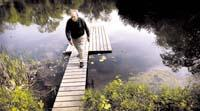
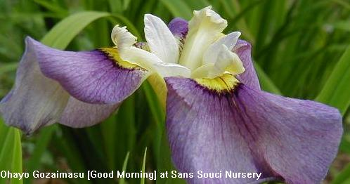

The IRISES have HIM - About L Bruce Hornstein Colorful flowers are like family to Monkton gardener
05/21/03 Bruce Hornstein's 13-acre garden contains thousands of irises in every color. The tint of purple blooms ranges from violet, plum and mauve, to burgundy and amethyst. Flowers the color of fresh peaches sit next to milky white blossoms that are planted in long, neat rows. Yellow irises can be as vibrant as lemons or as pale as the fluff on a newborn chick. Often, the flowers' lyrical names offer clues to their colors. In Hornstein's garden, each iris is clearly marked with a name and date of original cultivation. "Clear Morning Sky," "Island Sunset," "Cherry Supreme" or "Champagne Encore" describe how Mother Nature has painted each plant. Perhaps the best way to appreciate the thousands of varieties of Japanese irises, Siberian irises, tall bearded irises and dwarf irises is to attend Sans Souci's Open Garden on May 25 and 26 (2003). The gardens are normally only open to garden club tours by appointment.  In addition to the multitude of iris beds on his 13-acre San Souci Nursery in Monkton, Bruce Hornstein also has a pond with a natural boundary that keeps the water clean and clear. It takes more than an hour to tour the gardens, which include exhibition beds, a field devoted to a production garden, a woodland garden and a half-acre pond in which water irises are planted. But a tour of Sans Souci can last all day if Hornstein is around to tell stories about it. He can look at any iris and recite its complete history. He knows its common name and its Latin name. He can tell whether he bought the plant or received a cutting - or rhizome - from another gardener. He knows what year it was first introduced, when it blooms and how long the blooms last. He also knows if it is a rebloomer, a plant that produces flowers twice in a growing season. "There are days I can hardly remember what I had for breakfast," joked Hornstein, a 70-year-old retired veterinarian. "But it's different with my plants. I know each and every one." Irises are hardy perennials with six petals on each flower. Three petals called "standards" stand upright and three known as "falls" hang down. Bearded irises are those that have a fuzzy line or "beard" in the middle of each fall. Hornstein's nursery sells irises to both retail and wholesale customers. He acts like a proud papa when someone wants the best of his brood. In 2001, he sold 770 irises representing 65 varieties to Ladew Topiary Gardens when it was revamping its iris garden. "I go over there every now and then to visit my babies," he said. "Just to make sure they're doing OK." Ladew Gardens' associate director Karen Babcock said it took only one visit to Sans Souci Nursery by Ladew's director and head gardener to convince them to buy irises there. Hornstein helped with the new garden's arrangement, working with Ladew's landscape architect on the best placement of the irises. In fact, Hornstein has since been invited to Ladew Gardens to give a workshop on irises as part of its lecture series. And while irises are Hornstein's claim to fame, he could spend another full day telling visitors about the plantings on the rest of his property. There's a story behind the jasmine plant that blooms at night; rows of dawn redwoods and witch hazel; and Chinese redbuds on his property's edge. Just last year, he planted 1,000 dahlias and installed a drip irrigation system. "I get up every morning and hit the ground running," Hornstein said. "I just love being out here." Flower power Hornstein grew up in Baltimore and always had a fondness for growing plants and flowers. He was just a 7-year-old when he transplanted cuttings from his grandmother's hydrangeas and lilacs. After attending Washington College and University of Maryland, he graduated in 1957 from University of Georgia's veterinary school. He opened up the Animal Medical Center of Mt. Washington in 1965 and worked as a veterinarian until he retired in 1996. After living on a single-acre plot in Pikesville for more than 20 years, Hornstein first moved to Bentley Springs in Parkton, then built a house on 13 acres in Monkton in 1993. Now, his country retreat is a weekend getaway for his three children and seven grandchildren. The creation of Sans Souci (French for "without care") Nursery took root slowly over the past 10 years and continues to evolve.

"This is why an iris gardener has to live forever," Hornstein said, pointing to the pale yellow and lavender blooms. His exhibition garden also contains historic irises that have been in cultivation for more than 30 years. The tallest iris on his property is the Supreme Sultan, a bearded iris that is more than 48-inches tall with brown and yellow flowers. "Every day here is enjoyable," he said. "A garden is a reflection of your life. It's in constant transition and nothing's perfect. You enjoy what you have when you have it, then move on." For more information, call 410-557-0250 or 410-299-1075. To view a retrospective of Hornstein's irises online, visit http://www.irises.info.
|